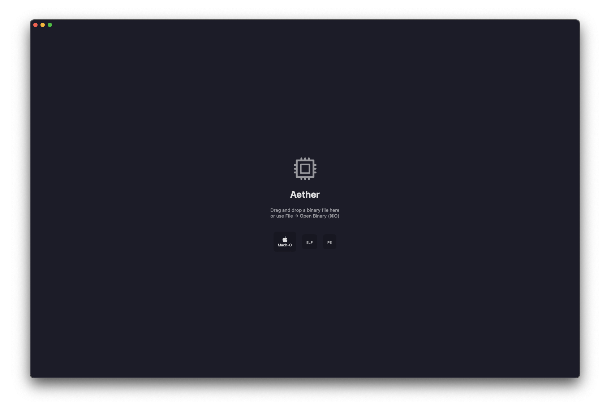
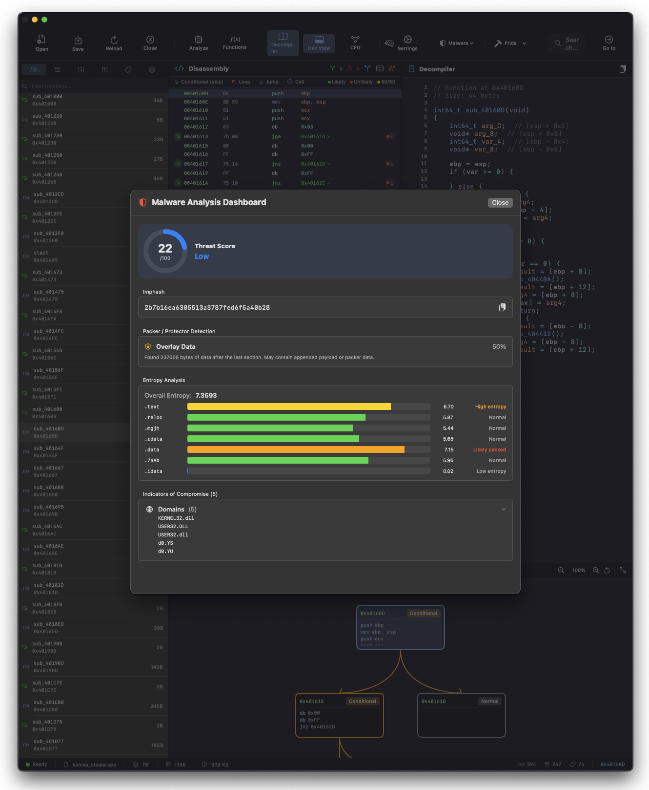
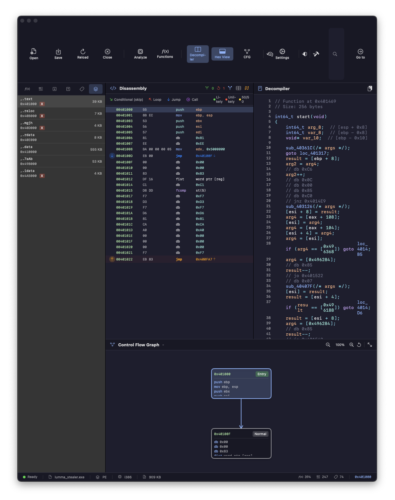
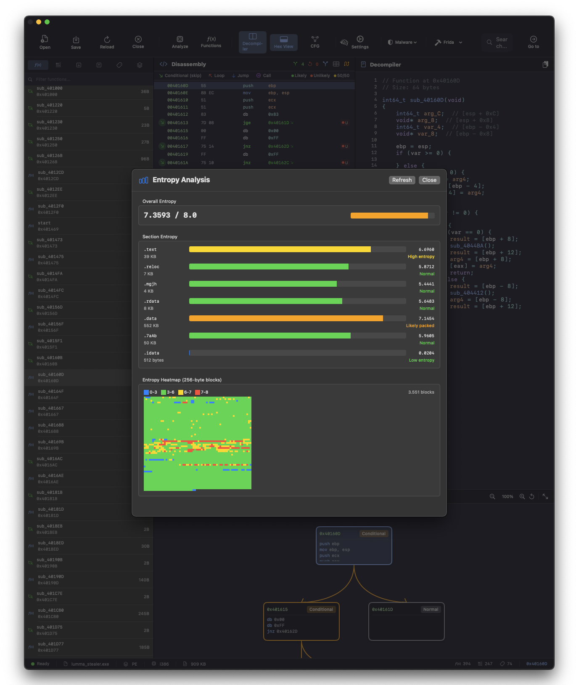
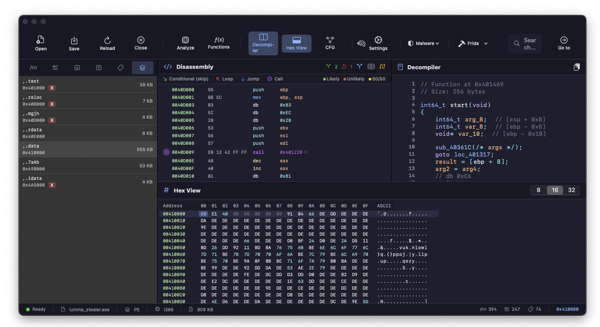
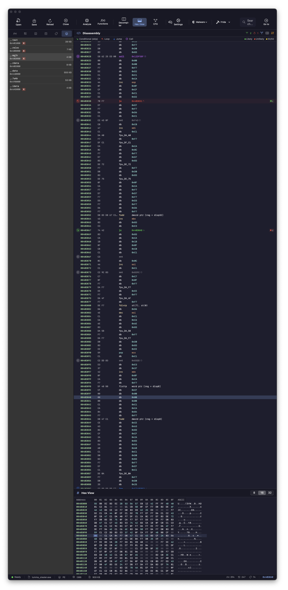
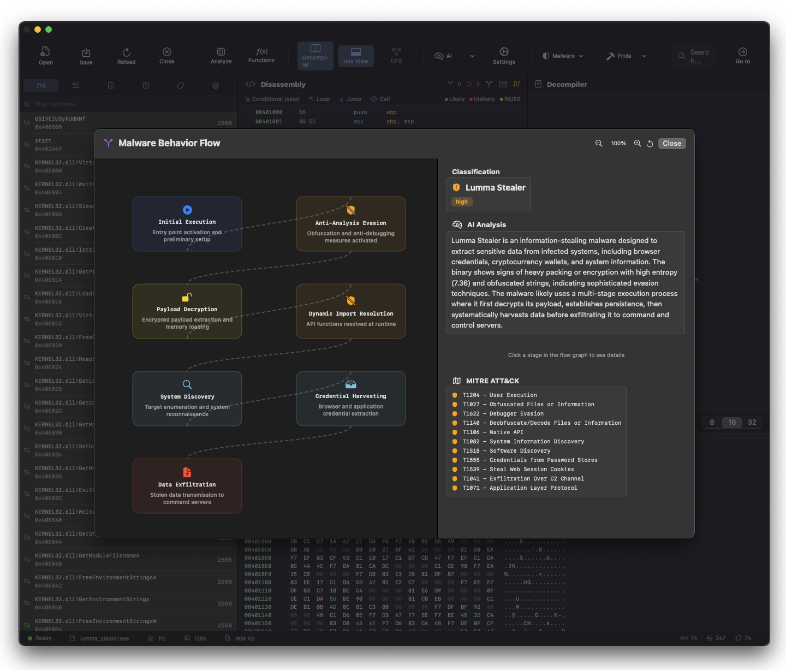

// Perche' Analizzare un Malware
Sezione 01. La domanda giustaOk, partiamo da una cosa che mi chiedono spesso: "ma perche' dovresti aprire un malware? Non basta l'antivirus?"
No. E ti spiego perche'. L'antivirus, storicamente, funziona come un buttafuori che controlla una lista di nomi. Se il tizio alla porta si e' messo una parrucca, non lo riconosce (e oggi i tipi con la parrucca sono tanti, e ti conviene riconoscerli, se non vuoi farti fottere). Il malware moderno fa esattamente questo: si cifra, si comprime, ruba certificati di aziende famose, e si presenta alla porta con un bel sorriso. L'antivirus vede "Spotify AB" e lo fa passare.
Analizzare un malware significa togliergli la parrucca. Guardare com'e' fatto dentro, capire cosa fa, dove manda i dati rubati, come si protegge. Non per accademia. Per difenderci. Se sai come funziona, sai dove bloccarlo.
E la cosa bella? Non serve nemmeno eseguirlo. L'analisi statica (cioe' guardare il file senza lanciarlo) ti racconta gia' quasi tutto. Basta sapere dove guardare.
// Cos'e' un Disassembler
Sezione 02. Lo strumento del mestiereQuando compili un programma C, il compilatore trasforma il codice sorgente in istruzioni macchina, cioe' byte che la CPU capisce. Un disassembler fa il percorso inverso: prende quei byte e li ritrasforma in istruzioni leggibili. Non torna al codice C originale (quello lo fa un decompiler), ma ti mostra cosa fa il processore, istruzione per istruzione.
Tipo, il byte 0x55 diventa push ebp. La sequenza 8B EC diventa mov ebp, esp. Sono le prime due istruzioni del classico prologo con frame pointer, quello che i compilatori generano quando non ottimizzano (o quando servono stack walk affidabili). Se vedi queste due all'entry point, sai gia' che stai guardando codice vero, non spazzatura.
| 1 | ; Prologo di funzione classico (i386) |
| 2 | 0x401469 push ebp ; salva il base pointer |
| 3 | 0x40146A mov ebp, esp ; nuovo stack frame |
| 4 | 0x40146C sub esp, 0x28 ; alloca 40 byte sullo stack |
| 5 | 0x40146F call 0x401000 ; chiama una funzione |
Per questa analisi usiamo Aether, un disassembler per macOS che ho scritto io (adoro complicarmi la vita). Supporta PE32, Mach-O, ELF, e ha un decompiler integrato. Lo apri, carichi il file, e lui ti mostra le sezioni, le funzioni, il disassembly. Niente linea di comando, niente setup. Drag and drop.

Perche' un disassembler proprio? IDA Pro costa migliaia di euro. Ghidra e' gratis ma pesante. Per il reverse engineering su Mac serviva qualcosa di nativo, veloce, che non ti facesse perdere mezz'ora a configurare un progetto. Aether e' quello.
// Il Campione
Sezione 03. Cosa c'e' sul tavoloIl paziente di oggi e' un Lumma Stealer. Arriva da tria.ge, una sandbox pubblica dove puoi caricare file sospetti e vedere cosa fanno. Score: 10 su 10. Cioe' il massimo della cattiveria.
Lumma (o LummaC2) e' un infostealer, un malware che ruba roba. Credenziali dai browser, wallet crypto, cookie di sessione, token Discord e Telegram. Si vende come servizio su forum underground: paghi, ti danno il pannello, costruisci il tuo campione. Malware-as-a-Service, tipo Netflix ma per rubare password. Come lo sappiamo? La struttura della config C2 nella sezione custom, le API WinHTTP risolte dinamicamente, la logica di decrypt della .data e il CIS kill switch sono coerenti con i campioni LummaC2 documentati da Proofpoint e Zscaler nel 2024-2025. Tria.ge lo classifica allo stesso modo.
Il nostro e' un file ZIP con password infected (standard per i sample di malware, cosi' l'antivirus non lo cancella dal download). Dentro c'e' un .exe da 887 KB. Lo apriamo con Aether. Non lo eseguiamo. Mai.
| 1 | # Hash del campione (per chi vuole verificare) |
| 2 | MD5 8a1934414a183f74eb98d1ee624b5978 |
| 3 | SHA1 21a7b9e0b0e2d9eaecc204eb3bb2e156a36fed82 |
| 4 | SHA256 5072ae603a238142cca3e3fedb774efa14c457a25ce8e1acdf83e88ed1b94e50 |

// Il Formato PE
Sezione 04. Il passaporto dell'exe
Ogni .exe su Windows segue il formato PE (Portable Executable). Pensalo come un passaporto: c'e' scritto chi sei, dove sei nato, e cosa porti con te. Un header DOS (retaggio degli anni '80, ma ancora li'), un header PE con le info sulla macchina target, e poi le sezioni, i "bagagli" del programma: codice, dati, import, risorse.
Se il programma e' un malware, il passaporto e' falso. Ma le bugie lasciano tracce, e noi sappiamo dove cercarle.
| 1 | import struct |
| 2 | |
| 3 | with open('sample.exe', 'rb') as f: |
| 4 | data = f.read() |
| 5 | |
| 6 | # I primi 2 byte sono sempre MZ (Mark Zbikowski, il tizio che l'ha inventato) |
| 7 | e_magic = data[0:2] # b'MZ' |
| 8 | # A offset 0x3C c'e' il puntatore al vero header PE |
| 9 | e_lfanew = struct.unpack_from('<I', data, 0x3C)[0] |
| 10 | # La firma deve essere PE\x00\x00, altrimenti non e' un PE valido |
| 11 | pe_sig = data[e_lfanew:e_lfanew+4] # b'PE\x00\x00' |
Il nostro amico ha il PE header a offset 0xE0, Machine 0x14C (Intel i386, 32 bit), compilato il 29 gennaio 2024. Entry point a 0x1469, nella sezione .text. Fin qui sembra tutto regolare. Ma quando guardi le sezioni, la maschera cade.

// Le Sezioni
Sezione 05. Dove si nasconde il payload
Un programma normale ha sezioni con nomi standard: .text per il codice, .rdata per i dati read-only, .data per le variabili globali. Quando trovi sezioni che si chiamano .mgjh o .7aAb... ecco, quello non l'ha messo Visual Studio.
| Sezione | Dimensione | Entropia | Permessi | Sospetto |
|---|---|---|---|---|
.text |
0x9A00 | 6.70 | R-X | OK |
.reloc |
0x1A00 | 5.87 | R-- | OK |
.mgjh |
0x0E00 | 5.44 | R-X | NOME STRANO |
.rdata |
0x2000 | 5.65 | R-- | OK |
.data |
0x86C00 | 7.15 | RW- | ENTROPIA ALTA |
.7aAb |
0xC351 | 5.96 | R-- | NOME STRANO |
.idata |
0x0200 | 0.02 | RWX | W+X |
Tre cose saltano all'occhio subito.
La .data e' gigante. 551 KB su 887 KB totali, piu' della meta' del file. E ha un'entropia di 7.15 su 8. Per capirci: il testo normale ha entropia ~4.5, il codice compilato ~6.5. Sopra il 7 vuol dire che i dati sono cifrati o compressi. Quello non e' codice, non sono variabili. E' un payload nascosto.
I nomi inventati. .mgjh e .7aAb non escono da nessun compilatore conosciuto. Se li apri con Aether, .mgjh e' pieno di bswap, not, neg, rotazioni. Il classico pattern di un unpacker custom. E' il pezzo di codice che decifra il payload dalla .data.
.idata e' RWX. Una sezione che e' leggibile, scrivibile E eseguibile contemporaneamente? In un programma legittimo non ha senso. Di solito .idata e' RW- (il loader ci scrive gli indirizzi risolti). Qui il flag X in piu' puo' essere un artefatto del packer, oppure un trampolino intenzionale: il malware potrebbe sovrascriverla a runtime con shellcode. I byte dentro? 511 su 512 sono zero. E' quasi vuota. Aspetta di essere riempita.
Regola veloce: Sezione RWX + entropia vicina a zero = possibile stage di unpacking. Il malware potrebbe scriverci shellcode a runtime, oppure il flag X e' un residuo del packer. In entrambi i casi, e' un red flag.
// Le Import
Sezione 06. Le API che tradiscono l'intento
Le import di un PE sono la lista della spesa del programma, le funzioni Windows che usera'. Un editor di testo importa CreateFileA e ReadFile. Un browser importa le socket. Un malware importa... beh, guardate voi.
| 1 | # KERNEL32.dll - la lista della spesa sospetta |
| 2 | VirtualAlloc # "dammi della memoria eseguibile" |
| 3 | VirtualProtect # "fammi cambiare i permessi a runtime" |
| 4 | CreateThread # "devo lanciare codice in parallelo" |
| 5 | LoadLibraryA # "carico DLL che non ho dichiarato" |
| 6 | GetProcAddress # "cerco funzioni per nome a runtime" |
| 7 | FreeConsole # "nascondo la finestra cosi' nessuno mi vede" |
| 8 | IsDebuggerPresent # "c'e' qualcuno che mi sta analizzando?" |
| 9 | GetTickCount # "quanto tempo e' passato? troppo = debugger" |
| 10 | QueryPerformanceCounter # "timing check ad alta risoluzione" |
Il pattern e' classico. LoadLibraryA + GetProcAddress = risoluzione dinamica delle API. Tradotto: il malware non dichiara le funzioni pericolose (tipo quelle per la rete o la crittografia) nella tabella di import. Le cerca per nome a runtime. Cosi' l'antivirus che fa analisi statica non le vede. Furbo.
Come funziona in pratica: Invece di importare HttpSendRequestA direttamente, il malware fa GetProcAddress(LoadLibraryA("winhttp.dll"), "WinHttpSendRequest"). Stessa funzione, zero tracce nella IAT. Le API di rete che Lumma usa a runtime (ma non dichiara) includono WinHttpOpen, WinHttpConnect, WinHttpSendRequest, WinHttpReceiveResponse. Tutte risolte dinamicamente.
Le tre funzioni anti-debug (IsDebuggerPresent, GetTickCount, QueryPerformanceCounter) servono a capire se qualcuno lo sta studiando. Il primo controlla direttamente il flag PEB. I timing check misurano il delta tra due punti del codice: troppo lungo significa breakpoint di un debugger, o jitter di una VM. Se qualcosa non torna, il malware cambia comportamento. O termina direttamente.
// Il Certificato Rubato
Sezione 07. Firmato da Spotify. Ma non e' Spotify.Questa e' la parte che fa ridere (e piangere). Il campione ha un certificato Authenticode. Firmato da Spotify AB. Emesso da DigiCert. Con tanto di timestamp 2023. Tutto perfetto. Tranne un piccolo dettaglio: il digest non corrisponde.
| 1 | Subject: CN=Spotify AB, O=Spotify AB |
| 2 | Issuer: DigiCert Trusted G4 Code Signing RSA4096 SHA384 2021 CA1 |
| 3 | Root: DigiCert Trusted Root G4 |
| 4 | Timestamp: DigiCert Timestamp 2023 |
| 5 | |
| 6 | Digest: MISMATCH # ops |
Cosa e' successo? Il certificato e' vero. E' stato estratto da un installer legittimo di Spotify e incollato nel PE del malware. L'idea e': Windows vede "Spotify AB" e si fida. Ma il digest (l'hash crittografico che il certificato autentica) non corrisponde piu', perche' il file dentro e' un altro.
E' come fotocopiare la firma di un notaio su un contratto diverso. La firma e' vera. Il contratto no.
Nota importante: Windows in pratica ignora la firma invalida. SmartScreen e UAC possono mostrare un avviso piu' generico ("editore sconosciuto"), ma l'esecuzione non viene bloccata. E indovina? La maggior parte degli utenti clicca "Esegui comunque".
// L'Entropia e il Payload Cifrato
Sezione 08. 7.15 su 8: dietro c'e' qualcosa
L'entropia di Shannon misura quanto sono "disordinati" i dati. Piu' e' alta, piu' i dati sono casuali (o cifrati). Un programma C compilato sta sui 6.5. Dati cifrati o compressi di solito vanno da 7 in su. La sezione .data del nostro campione? 7.15. L'entropia complessiva del file e' 7.36. Questo non e' un programma. E' un container cifrato con un piccolo decifratore appiccicato sopra.

| 1 | import math |
| 2 | |
| 3 | def entropy(data): |
| 4 | """Entropia di Shannon (0-8). Sopra 7 = spesso indica packing o cifratura.""" |
| 5 | freq = [0] * 256 |
| 6 | for b in data: |
| 7 | freq[b] += 1 |
| 8 | total = len(data) |
| 9 | return -sum( |
| 10 | (c/total) * math.log2(c/total) |
| 11 | for c in freq if c > 0 |
| 12 | ) |
C'e' un dettaglio ancora piu' gustoso. Il byte piu' frequente nella sezione .data e' 0xDE, con l'11.67% di occorrenze. In una distribuzione uniforme (256 valori possibili) ogni byte dovrebbe comparire circa lo 0.39% (1/256). Un byte che appare 30 volte piu' spesso del previsto e' un forte indizio di XOR a byte singolo, o almeno del byte dominante di una chiave multi-byte.
Il trucco e' semplice: in un payload XOR-cifrato, i byte null del plaintext (0x00) diventano tutti uguali alla chiave. E un eseguibile ha un sacco di byte null (padding, allineamento, stringhe terminate). Quindi il byte piu' comune nel ciphertext e' un ottimo candidato per la chiave (o per il byte dominante di una chiave multi-byte). L'entropia a 7.15 (non 7.9+) suggerisce che la cifratura non e' un semplice XOR a byte singolo. Probabilmente ci sono piu' layer, o una chiave rolling. Ma il 0xDE e' un ottimo punto di partenza per l'analisi.

// L'Export e la Configurazione C2
Sezione 09. Dove chiama casa
Il PE ha una tabella di export con una singola funzione: GSiVEIU3ykUdmNf. Un nome completamente casuale. Un programma vero esporta roba tipo DllMain o ServiceStart. Un nome a caso indica un loader: qualcuno chiamera' quella funzione per nome, probabilmente da un dropper.
00095230 33 79 6B 55 64 6D 4E 66 00 00 00 00 00 00 00 29 3ykUdmNf.......
Subito dopo l'export, nella sezione .7aAb, ci sono ~48 KB di stringhe alfanumeriche dense. E' la configurazione cifrata del Lumma: i server C2, i target, i parametri di esfiltrazione. A runtime il malware le decifra in memoria e le usa per contattare l'infrastruttura dell'attaccante.
La sandbox di tria.ge ha eseguito il campione e intercettato le connessioni. Ecco dove chiama casa:
15.197.240.20:443 HTTP 405
34.41.139.193:443 HTTP 200 ATTIVO
15.197.240.20:443 HTTP 405
15.197.240.20:443 HTTP 405
Quattro domini .shop con nomi che sembrano generati buttando parole inglesi in un frullatore. Tutti su HTTPS, endpoint /api. Solo uno risponde, gli altri danno 405. Sono C2 di riserva: se uno cade, il malware prova il successivo. Il payload inviato e' un POST da 8 byte. Probabilmente un check-in: "sono vivo, dimmi cosa fare".
// Anti-Analisi
Sezione 10. Come il malware si difendeLumma non e' stupido. Sa che qualcuno potrebbe analizzarlo, e si protegge. Almeno cinque tecniche visibili gia' dalle import e dal codice.
La piu' interessante e' il language check. Il malware controlla la lingua del sistema tramite GetLocaleInfoA. Se trova russo, ucraino, bielorusso, kazako, uzbeko o altre lingue dell'area CIS... esce. Non fa nulla. E' una protezione dell'autore: non colpire macchine nella propria regione, cosi' la polizia locale non si interessa.
CIS kill switch. Se il sistema e' in russo, ucraino, bielorusso, kazako o uzbeko, il malware termina senza fare nulla. Tecnica talmente comune che alcuni ricercatori consigliano (scherzando, ma non troppo) di installare il language pack russo come protezione.
Se apri la sezione .mgjh con Aether, il disassembly conferma l'offuscamento. Prologo classico push ebp; mov ebp, esp seguito da una cascata di istruzioni FPU assurde: fild, fadd, fdivp, fisttp, fpu_DA_A8, fpu_DF_C1. Operazioni in virgola mobile buttate li' senza senso logico, intervallate da db 0xXX (byte non decodificabili). E' un decifratore: prende i dati dalla .data, li trasforma con queste operazioni, e produce il payload vero in memoria. Molti stealer moderni usano packer custom proprio per questo: ogni campione ha un unpacker diverso, generato dal builder, quindi le firme statiche degli antivirus non lo riconoscono.

// Il Flusso di Esecuzione
Sezione 11. Dalla doppia click al furtoMettendo insieme tutti i pezzi, ecco cosa succede quando qualcuno (non noi) fa doppio click su questo file:
Aether puo' generare questo flusso automaticamente con l'AI. Gli dai il binario, lui analizza sezioni, import, entropia, anomalie, e ti restituisce il grafo comportamentale con la spiegazione e il mapping MITRE ATT&CK.

Quando Lumma arriva allo step "Steal", sa esattamente dove guardare: i database SQLite di Chrome e Edge (Login Data, Cookies, Web Data), i file dei wallet crypto, i token di Discord e Telegram. Le password dei browser sono protette con DPAPI, che le cifra con una chiave derivata dalla password dell'utente loggato. Il punto e': se il malware gira nello stesso contesto utente, gli basta chiamare CryptUnprotectData e DPAPI le decifra senza chiedere nulla. Niente exploit, niente privilege escalation. Solo il fatto di essere gia' dentro. Da notare: Lumma non installa persistenza. Ruba tutto in una sessione e sparisce. E' un mordi-e-fuggi.
Il trucco chiave: il payload vero non esiste mai su disco. Vive solo in memoria, dopo la decifratura. L'antivirus che scansiona il file con le firme statiche vede solo il decifratore (pochi KB di codice generico) e il blob cifrato (che sembra rumore). Per questo lo score di tria.ge sale drasticamente quando entra in gioco l'analisi comportamentale (sandbox, memory dump, network capture) rispetto alla sola analisi statica.
// MITRE ATT&CK
Sezione 12. La mappa delle tattichePer chi vuole andare a fondo: MITRE ATT&CK e' un catalogo pubblico di tutte le tecniche usate dagli attaccanti. Ogni tecnica ha un ID e una descrizione. Ecco quelle che abbiamo trovato nel nostro campione.
| Tecnica | ID | Evidenza |
|---|---|---|
| System Location Discovery | T1614 |
GetLocaleInfoA, NLS registry |
| System Language Discovery | T1614.001 |
CIS kill switch |
| Obfuscated Files or Information | T1027 |
Payload cifrato, entropia 7.15 |
| Software Packing | T1027.002 |
Custom unpacker in .mgjh |
| Dynamic API Resolution | T1106 |
LoadLibraryA + GetProcAddress |
| Code Signing | T1553.002 |
Certificato Spotify AB rubato |
| Application Layer Protocol | T1071.001 |
HTTPS POST a C2 .shop |
| Debugger Evasion | T1622 |
IsDebuggerPresent, timing |
| Credentials from Password Stores | T1555.003 |
Chrome/Edge Login Data, DPAPI |
| Exfiltration Over C2 Channel | T1041 |
POST dati rubati via HTTPS al C2 |
| Steal Web Session Cookie | T1539 |
Cookie SQLite da Chrome/Edge |
// Come Proteggersi
Sezione 13. Lezioni praticheOk, abbiamo smontato il giocattolo. Ora, cosa ce ne facciamo? Quattro cose concrete.
1. Il certificato non basta. Se un file e' firmato "Spotify AB" ma il digest non torna, e' manomesso. Windows lo dice, ma il warning e' piccolo. Non fidarti solo della firma.
2. L'entropia e' un radar. Un file con entropia sopra 7.0 spesso indica cifratura o packing. Nessun programma legittimo ha una .data da 551 KB con entropia 7.15 (anche se file multimediali compressi possono avere entropia alta, il contesto conta). Strumenti come pestudio, Detect It Easy, o uno script Python da 12 righe possono calcolarlo in un secondo.
3. Le sezioni parlano. Nomi inventati, permessi RWX, sezioni quasi vuote. Sono tutti red flag. Un analista li vede in 30 secondi. Un antivirus basato su firme potrebbe non vederli mai.
4. I domini C2 hanno pattern. Parole inglesi a caso + TLD .shop + endpoint /api. Sono generati algoritmicamente. Un DNS sinkhole o un threat feed aggiornato li blocca prima che il malware possa contattarli.
// Vuoi Provare?
Sezione 14. Riprodurre l'analisiSe vuoi ripetere tutto da zero, non serve Aether. Bastano tre tool da riga di comando e un po' di Python.
| 1 | # Estrarre le stringhe leggibili |
| 2 | strings -n 8 sample.exe | grep -i "http\|shop\|api\|chrome\|wallet" |
| 3 | |
| 4 | # Analisi PE con pefile (pip install pefile) |
| 5 | python3 -c " import pefile pe = pefile.PE('sample.exe') for s in pe.sections: print(f'{s.Name.decode().strip(chr(0)):8s} entropy={s.get_entropy():.2f}') " |
| 6 | |
| 7 | # Disassembly con radare2 (gratuito) |
| 8 | r2 -A sample.exe -c "afl" -q # lista funzioni |
| 9 | r2 -A sample.exe -c "s entry0; pdf" -q # disassembly entry point |
Con pefile vedi sezioni, entropia, import e certificati. Con strings trovi gli URL in chiaro. Con radare2 hai il disassembly completo, gratis. Aether rende tutto piu' visuale, ma i dati sono gli stessi.
// Il Punto
Sezione 15. Tirando le somme
Senza eseguire una sola istruzione, abbiamo estratto: la famiglia del malware, il certificato rubato, i server C2, le tecniche anti-analisi, la struttura del payload cifrato, e il flusso di esecuzione completo. Con un disassembler, struct.unpack, math.log2, e un po' di curiosita'.
L'analisi del malware non e' roba da geni o da agenti segreti. E' leggere un formato documentato (il PE), sapere dove guardare, e farsi le domande giuste. Le sezioni con nomi strani, l'entropia troppo alta, le import sospette, il certificato con digest sbagliato. Sono segnali che un programma legittimo non produce mai. Messi insieme, raccontano tutta la storia.
"Un malware puo' cifrare il payload, rubare un certificato, offuscare il codice. Ma non puo' nascondere la struttura del suo contenitore."
L'header PE e' il documento d'identita'. E i documenti falsi hanno sempre qualcosa che non torna.
Il campione e' su tria.ge. Aether e' su GitHub. Se vuoi provare a ripetere l'analisi, hai tutto. E ricorda: non eseguire mai un malware fuori da una sandbox isolata.